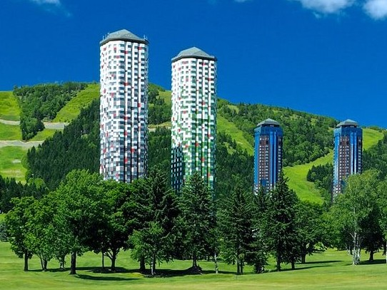

| 日程 | 行程 |
|---|---|
| 8月28日（金） | 移動（伊丹空港→新千歳空港） 新千歳空港到着口集合 レンタカーでトリトン寿司へ（昼食） トマム星野リゾートへ移動・宿泊 |
| 8月29日（土） | 十勝牧場・六花の森観光 ばんえい競馬場第１レース観戦 トマム泊 |
| 8月30日（日） | トマムにて一日滞在 ※雲海見学の日程により29日と入替あり |
| 8月31日（月） | トマム出発・支笏湖または夕張炭鉱見学 新千歳空港にてショッピング 移動（新千歳空港→伊丹空港） |
8月28日（金）のランチはトリトン清田店を予定していますがその他の日のご希望をよろしくお願いします。
8月29日（土）：帯広周辺←食べログをチェック
8月30日（日）：十勝清水周辺←食べログをチェックまたは新得周辺←食べログをチェック
土曜・日曜の日程を入れ替える可能性がありますので直前に予約するようにいたしましょう。